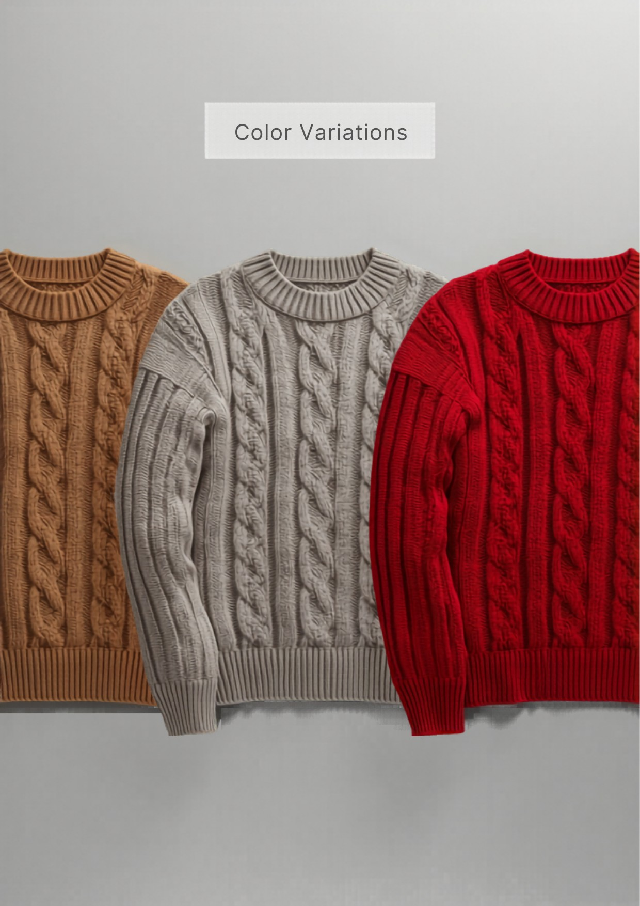

和
東和盛泰株式会社TOUWASEITAI CO., LTD.
PRODUCTION TECH PACK
工場用 製品仕様書
FACTORY / 製造用・全3葉 1/3
01
製品概要・基準写真
PRODUCT & REFERENCE PHOTO

▲ 基準現品写真（色：キャメル／グレー／レッド）。本写真と360°図・寸法を相違なきこと。
| カテゴリ | 長袖プルオーバー（クルーネック・ケーブル編み） |
|---|
| 対象 | レディース 30〜40代前半（ユニセックス着用可） |
|---|
| シルエット | ドロップ肩・ゆったり。幅広リブ裾。1枚で主役、展示の引きに。 |
|---|
| 編地 | 身頃・袖＝アラン／ケーブル編み全面／衿・裾・袖口＝1×1リブ（裾は幅広）。全成形。 |
|---|
| きかせ所 | 立体的なアラン／ケーブルを左右対称・度目均一に編む編立技術。編立時間がかかり工場差が出る。 |
|---|
| 想定上代 | ¥3,900〜4,900（参考。確定はカウンターサンプル承認後） |
|---|
02
360°展開図（前・後・側）
360° TECHNICAL FLATS ・ FRONT / BACK / SIDE
※ ドロップ肩・セットイン袖（前振りなし）。破線＝脇接ぎ位置。ケーブルは左右対称・度目均一。裾は幅広1×1リブ5cm。
03
パーツ展開図（編立パネル）
PANEL DEVELOPMENT ・ KNIT PARTS
※ 全パーツ横編全成形。接ぎ＝肩:リンキング／脇・袖下:オーバーロック＋本縫い／衿:1×1リブリンキング付け・伸び止め。
和
東和盛泰株式会社TOUWASEITAI CO., LTD.
MEASUREMENT SPEC
寸法・POM
FACTORY / 製造用・全3葉 2/3
04
採寸ポイント図（POM）
POINTS OF MEASURE ・ 平置き
| 記号 | 採寸箇所 | 採寸方法 |
|---|
| A | 着丈 | HPS→裾端 |
| B | 身幅 | 脇下2.5cm下を直線 |
| C | 肩幅（ドロップ） | 肩先→肩先 |
| D | 袖丈 | 肩先→袖口端 |
| E | 袖幅 | アームホール下を直線 |
| F | 袖口幅 | 袖口リブ端 |
| G | アームホール | 肩先→脇下 直線 |
| H | 衿ぐり幅 | 衿付け内寸 |
| I | 前衿ぐり深さ | HPS水平線→前衿底 |
| J | 後衿ぐり深さ | HPS水平線→後衿底 |
| K | 衿高 | 衿付け→衿端 |
| M | 裾リブ高 | 裾端→リブ切替 |
| N | 袖口リブ高 | 袖口端→リブ切替 |
| O | 裾幅 | 裾端を直線 |
05
寸法表・グレーディング
SIZE SPEC & GRADING ・ 単位 cm
| 記号 | 採寸箇所 | S | M | L | XL | XXL | 許容差± |
|---|
| A | 着丈 | 58 | 60 | 62 | 64 | 66 | 1.5 |
|---|
| B | 身幅 | 50 | 53 | 56 | 59 | 62 | 2.0 |
|---|
| C | 肩幅（ドロップ） | 42 | 44 | 46 | 48 | 50 | 1.0 |
|---|
| D | 袖丈 | 54 | 55 | 56 | 57 | 58 | 1.5 |
|---|
| E | 袖幅 | 19 | 20 | 21 | 22 | 23 | 1.0 |
|---|
| F | 袖口幅 | 9.0 | 9.5 | 10.0 | 10.5 | 11.0 | 0.5 |
|---|
| G | アームホール | 21 | 22 | 23 | 24 | 25 | 1.0 |
|---|
| H | 衿ぐり幅 | 18.0 | 18.5 | 19.0 | 19.5 | 20.0 | 0.7 |
|---|
| I | 前衿ぐり深さ | 7.0 | 7.5 | 8.0 | 8.5 | 9.0 | 0.5 |
|---|
| J | 後衿ぐり深さ | 2.0 | 2.0 | 2.5 | 2.5 | 3.0 | 0.5 |
|---|
| K | 衿高 | 3.5 | 3.5 | 3.5 | 3.5 | 3.5 | 0.3 |
|---|
| M | 裾リブ高 | 5.0 | 5.0 | 5.0 | 5.0 | 5.0 | 0.5 |
|---|
| N | 袖口リブ高 | 5.0 | 5.0 | 5.0 | 5.0 | 5.0 | 0.5 |
|---|
| O | 裾幅 | 50 | 53 | 56 | 59 | 62 | 2.0 |
|---|
※ 平置き・自然状態（ケーブル・リブを伸ばさない）。グレーディングは身幅+3 / 肩+2 / 着丈+2 を基本ピッチ。基準＝M。
06
編密度・度目指示
KNITTING DENSITY
| ゲージ | 7GG 横編（全成形） | 基準度目 | 10cm角の目数・段数はカウンターサンプル時に実測・記録し量産固定 |
|---|
| ケーブル | 交差本数・ピッチを身頃左右対称に。引き込みの幅縮みを度目で補正 | 衿 | 1×1リブ・身頃より度目詰め（伸び止め） |
|---|
07
カラー展開・色番
COLORWAY
| No. | カラー名 | 色番 | PANTONE TPX | 備考 |
|---|
| 1 | キャメル | CML | 16-1326 | 定番（現品基準） |
| 2 | グレー | GRY | 15-4503 | 着回し・最量産色 |
| 3 | レッド | RED | 18-1664 | 展示映え・差し色 |
| 4 | ブラック | BLK | 19-4006 | 通年・着回し |
※ 確定はラボディップ（編地色見本）承認による。濃色は摩擦堅牢度を別途確認。
和
東和盛泰株式会社TOUWASEITAI CO., LTD.
CONSTRUCTION & QC
素材・縫製・検品
FACTORY / 製造用・全3葉 3/3
08
素材・付属（BOM）
BILL OF MATERIALS
| 本体糸 | アクリル・ウール混（立体感・抗ピリング）。混率はサンプル時確定 | 番手/本数 | 7GG適合の中太番手。引揃え本数はサンプル時確定 |
|---|
| 縫製糸 | ウーリーナイロン／スパン#60／本体色合わせ | 付属 | 釦・装飾なし（プルオーバー） |
|---|
| 織ネーム | 後ろ衿中央・縦型 | 品質表示 | 左脇縫い代・裾上10cm／組成・原産国・洗濯絵表示 |
|---|
| 下げ札 | 主札＋品番札（右袖・ガンタッカ） | 個包装 | OPP袋＋台紙 |
|---|
09
ディテール拡大・縫製指示
DETAIL CALLOUTS
クルー衿
1×1リブ・クルーネック。衿高3.5cm。リンキング付け・伸び止め。
ケーブル
2×2／3×3交差のアラン。交差本数・ピッチ左右対称。ねじれ・歪み不可。
袖口
1×1リブ袖口・リブ高5cm。袖下＝オーバーロック＋本縫い。
裾
幅広1×1リブ裾・リブ高5cm。脇＝オーバーロック＋本縫い・裾は閂補強。
10
縫製・接ぎ仕様
CONSTRUCTION
| 肩接ぎ | リンキング（目移し接ぎ） | 脇・袖下 | 4本針オーバーロック＋本縫い |
|---|
| 袖付け | セットイン縫製（イセ少・左右対称） | 衿付け | 1×1リブリンキング付け・衿ぐり伸び止め |
|---|
| 縫目密度 | 本縫い 3.0mm/針（約8.5針/インチ） | 仕上げ | ケーブルの立体を潰さないソフト整形セット（圧縮不可） |
|---|
11
洗濯表示・梱包
CARE & PACKING
| 洗濯表示 | 手洗い（弱）／漂白不可／タンブラー乾燥不可／アイロン中温（あて布）／日陰の平干し ※ウール混・ネット使用・平干し推奨 |
|---|
| たたみ | 三つ折り（台紙入り） | 個包装 | OPP個包装 |
|---|
12
検品基準・合否
QUALITY CONTROL
- 寸法：全POMを許容差内。基準M。ケーブル柄の位置・本数左右対称必須。
- 編立：ケーブルのねじれ・歪み・交差抜け・度目不揃い・段差は不良。
- 抗ピリング：JIS L 1076（ICI法）3-4級以上を目標。
- 洗濯収縮：タテ・ヨコ ±3%以内（ウール混の縮みに注意）。
- 染色堅牢度：摩擦・洗濯とも4級以上を目標（濃色は別途確認）。
- 付属・表示：織ネーム/品質表示の位置・内容を現品照合。検針通過。
- ※本仕様書は提案兼製造指示。寸法・度目・原価は参考値を含み、量産確定はカウンターサンプル承認後とする。